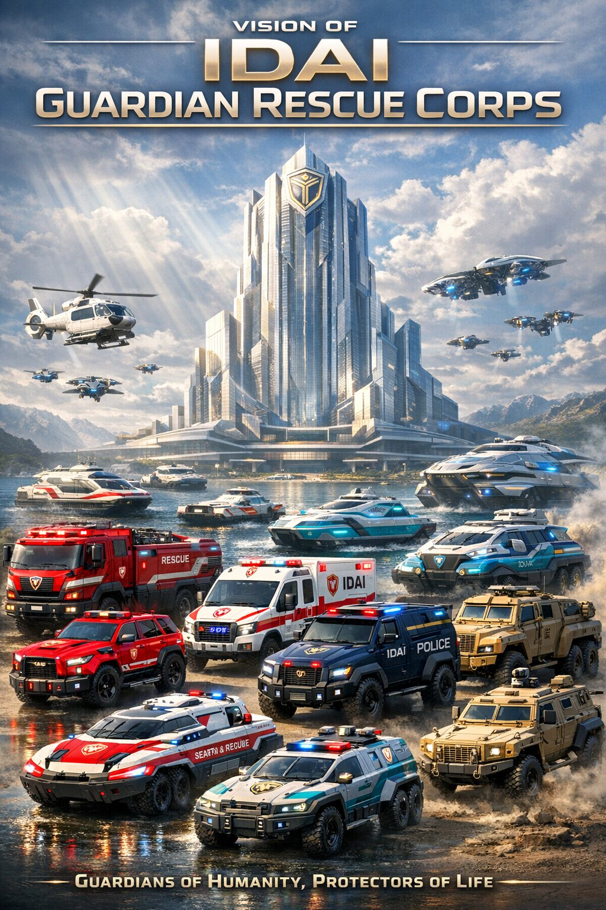
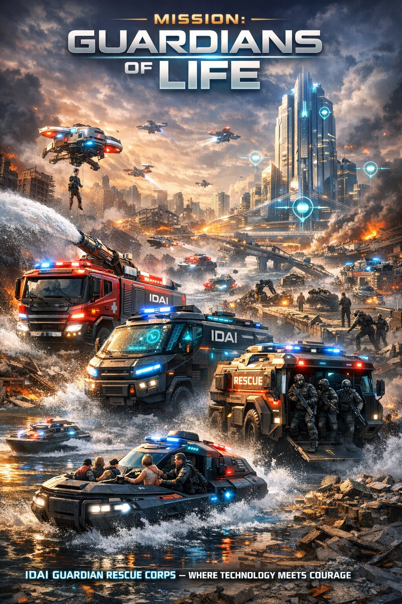
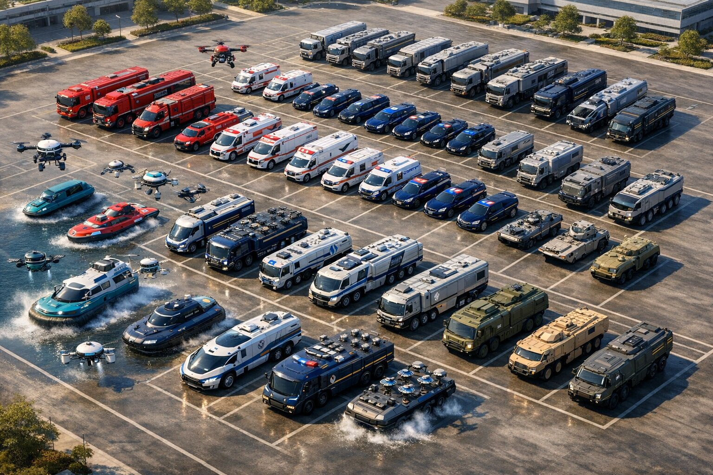
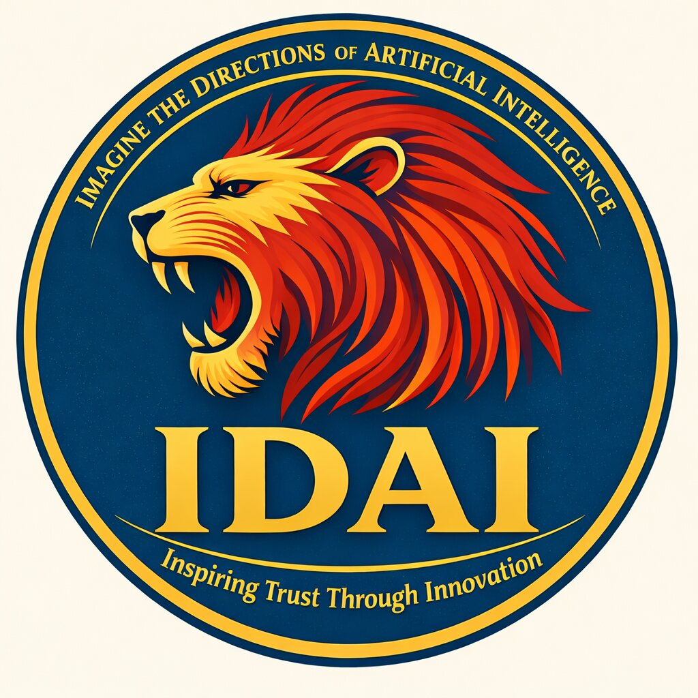

The IDAI Guardian Response Corps is a unified emergency protection and rapid-response system dedicated to safeguarding lives, property, and public stability. It brings together fire suppression, medical rescue, law enforcement, and disaster relief under a single coordinated identity, ensuring efficiency, discipline, and harmony in critical situations. The corps operates a versatile fleet of specialized response units designed for blazing fires, urgent medical aid, high-speed pursuit, aerial surveillance, waterborne emergencies, and mobile coordination, enabling swift deployment across urban, rural, and disaster-affected areas. Guided by principles of justice, humanity, and resilience, the corps blends advanced technology with organized strategies. By unifying essential emergency services, the IDAI Guardian Response Corps embodies a modern guardian system committed to protection, compassion, and responsible service to society.

The vision of the IDAI Guardian Response Corps is to unite resilience, compassion, and advanced technology into a single covenant of guardianship. It seeks to harmonize rapid-response systems across every frontier of protection, ensuring that communities remain safeguarded in times of crisis. By blending innovation with discipline, the Corps reflects a promise of vigilance and mercy, standing as a living monument of responsibility and hope.
Beyond its functional strength, this vision embodies ceremonial dignity, adorned with symbols of unity and guardianship that inspire trust and confidence. It represents readiness and compassion, reminding humanity that protection is not only a duty but a sacred covenant. Guided by justice and resilience, the Corps reflects IDAI’s eternal mission: to safeguard life, preserve hope, and inspire trust through unwavering guardianship.

The mission of the IDAI Guardian Response Corps is to safeguard humanity by unifying emergency protection, disaster relief, and humanitarian service under a single covenant of guardianship. It strives to deliver rapid, disciplined, and compassionate response across every frontier—fire, medical, law enforcement, military, and waterborne operations—ensuring that no community is left vulnerable in times of crisis. Through innovation and resilience, the Corps embodies readiness and responsibility, acting as a living monument of trust and protection.
Beyond its operational strength, this mission reflects ceremonial dignity, adorned with symbols of unity and guardianship that inspire confidence and hope. It represents not only the duty to protect but the sacred promise to preserve life, restore stability, and uphold justice. Guided by vigilance, compassion, and resilience, the Corps fulfills IDAI’s eternal covenant: to protect humanity through innovation, mercy, and unwavering guardianship.

The IDAI Guardian Response Corps Headquarters stands as the central command hub of guardianship, resilience, and unity. Designed with fortified architecture, advanced communication arrays, and integrated control systems, it serves as the nerve center for all rescue, defense, and ceremonial operations. Within its walls, strategic planning, real-time monitoring, and rapid deployment coordination take place, ensuring that every mission is executed with precision and responsibility. Housing specialized divisions for disaster response, medical aid, and technological innovation, the headquarters embodies the covenant of protection that defines IDAI’s mission.
Beyond its functional excellence, the Guardian Response Corps Headquarters is a monumental symbol of dignity and guardianship. Adorned with insignia, ceremonial halls, and national emblems, it represents unity, hope, and readiness. Its presence in parades, national events, and global showcases transforms it into a living monument of resilience. More than a building, it reflects IDAI’s eternal promise: to safeguard humanity through innovation, compassion, and unwavering responsibility.
The IDAI Fire Service and Civil Defense Rescue system is a unified emergency framework dedicated to protecting lives, property, and public safety with speed and discipline. It integrates advanced firefighting vehicles, rapid-response engines, agile SUVs, and aerial drones to ensure swift deployment across urban and rural areas. Equipped with cutting-edge suppression technology, communication networks, and surveillance tools, the system embodies resilience and guardianship. More than a fleet, it represents a covenant of trust—combining technical strength with ceremonial dignity to reassure communities that protection, compassion, and responsibility remain at the heart of IDAI’s mission.

The IDAI Ember Guardian fire truck is a powerful frontline protector, designed to respond instantly to emergencies. Its bold red frame and advanced firefighting systems, including a mounted water cannon and emergency lights, ensure rapid action when lives and property are at risk.
Beyond its technical strength, the Ember Guardian embodies IDAI’s guardianship philosophy. The markings of “Fire Service and Civil Defense” highlight its dual role as both a practical responder and a ceremonial symbol of community trust.
This vehicle is more than machinery; it is a guardian spirit in motion. Every detail, from its reinforced design to its symbolic presence, represents readiness, compassion, and responsibility, making the Ember Guardian a beacon of hope in times of crisis.

The IDAI Ocean Sentinel is the specialized Fire Service & Civil Defense naval fire truck, engineered to safeguard communities across rivers, coastal zones, and flood‑affected regions. Built with reinforced hulls, advanced propulsion systems, and rapid suppression technology, it ensures firefighters can respond swiftly to emergencies on water. Its adaptive design allows seamless coordination with land‑based engines and aerial units, bridging the gap between terrestrial firefighting and maritime guardianship.
Equipped with high‑capacity water cannons, foam deployment systems, and encrypted communication arrays, the Ocean Sentinel provides both tactical strength and humanitarian support. Beyond its technical excellence, it embodies ceremonial dignity, adorned with insignia and symbolic markings that project unity, vigilance, and resilience. More than a rescue craft, the Ocean Sentinel stands as a moving monument of guardianship, representing readiness, compassion, and responsibility in every mission to protect humanity across the waters.

The IDAI Flame Guardian is the dedicated Fire Service & Civil Defense rescue helicopter, engineered to deliver speed, precision, and resilience in aerial firefighting and emergency response missions. Equipped with advanced avionics, thermal imaging systems, and high‑capacity water and foam deployment units, it ensures rapid suppression of fires across urban, rural, and coastal regions. Its AI‑assisted navigation and encrypted communication arrays allow seamless coordination with ground engines, naval fire trucks, and disaster response units.
Beyond its technical excellence, the Flame Guardian embodies ceremonial dignity, adorned with insignia and symbolic markings that project unity, vigilance, and guardianship. As a sentinel in the skies, it represents readiness, compassion, and responsibility, reinforcing IDAI’s covenant of protection. More than a helicopter, the Flame Guardian stands as a beacon of hope and resilience, safeguarding humanity through innovation and unwavering aerial guardianship.

The IDAI Wave Guardian is the hybrid amphibian rescue truck of the Fire Service & Civil Defense fleet, engineered to operate seamlessly across both land and sea. Built with reinforced armor, adaptive suspension, and advanced propulsion systems, it ensures firefighters can respond swiftly to emergencies in urban streets, rugged terrains, rivers, and coastal zones. Its dual‑mode design allows rapid transition between road travel and water navigation, making it indispensable in flood‑affected regions and maritime disasters.
Equipped with high‑capacity water cannons, foam suppression units, and encrypted communication arrays, the Wave Guardian delivers tactical strength and humanitarian support wherever duty calls. Beyond its technical excellence, it embodies ceremonial dignity, adorned with insignia and symbolic markings that project unity, resilience, and guardianship. More than a machine, the Wave Guardian stands as a moving monument of protection, representing readiness, compassion, and responsibility in every mission to safeguard humanity across both land and sea.

The IDAI Firestorm Rapid Engine is a high-performance rescue vehicle built for speed and precision. Its powerful engine and advanced suppression systems allow it to reach fire zones in record time, delivering immediate response when every second counts.
Engineered with reinforced durability and agile maneuverability, the Firestorm carries cutting-edge firefighting technology, including rapid water deployment and foam systems. It is also equipped with communication tools to coordinate seamlessly with other rescue units.
More than a machine, the Firestorm Rapid Engine embodies IDAI’s spirit of guardianship. It represents strength, urgency, and compassion, serving as a symbol of unwavering readiness to protect lives and restore safety in moments of crisis.

The IDAI Blaze Runner fire SUV is crafted for rapid mobility and frontline response. Compact yet powerful, it can swiftly navigate urban streets and rugged terrains, ensuring firefighters reach critical zones without delay.
Equipped with advanced suppression systems, communication gear, and emergency lighting, the Blaze Runner combines speed with reliability. Its design emphasizes agility, making it ideal for quick interventions where larger engines may struggle to maneuver.
Beyond its technical role, the Blaze Runner symbolizes IDAI’s guardianship spirit. It represents readiness, resilience, and compassion, standing as a trusted companion in emergencies and a beacon of hope for communities in need.

The IDAI Pyro Scout fire drone is a cutting-edge aerial responder, designed to provide rapid surveillance and precision firefighting support. Its lightweight frame and advanced flight systems allow it to reach hazardous zones that ground vehicles cannot access, ensuring swift intervention from above.
Equipped with thermal imaging, water mist sprayers, and communication relays, the Pyro Scout enhances situational awareness while delivering targeted suppression. It works seamlessly alongside larger engines and rescue units, acting as the eyes in the sky during critical operations.
Beyond its technical role, the Pyro Scout symbolizes IDAI’s innovation and guardianship. It represents vigilance, agility, and compassion, serving as a beacon of hope and protection whenever communities face the threat of fire.
The IDAI Police Force Rescue Fleet is a specialized unit designed to uphold justice, safeguard communities, and respond swiftly to emergencies. It combines high-performance vehicles like the Justice Falcon supercar, engineered for speed and precision in pursuit operations, with the Sentinel V7, a fortified guardian equipped with surveillance systems and rapid deployment capabilities. Together, these vehicles embody vigilance, discipline, and resilience, ensuring law enforcement can act decisively in both urban and rural environments. More than machinery, the fleet symbolizes IDAI’s covenant of guardianship, projecting authority, trust, and responsibility while reinforcing the nation’s commitment to law and order.

The IDAI Sentinel V7 stands as the steadfast guardian of law and order, engineered to embody strength, vigilance, and authority. Its commanding presence ensures that peace and justice are upheld across every frontier.
Equipped with advanced surveillance systems, reinforced armor, and rapid deployment capabilities, the Sentinel V7 is designed to respond decisively to threats. It serves as both a protector of citizens and a symbol of unwavering discipline.
Beyond its technical excellence, the Sentinel V7 reflects IDAI’s philosophy of guardianship. It represents resilience, responsibility, and moral order, standing as a beacon of trust and stability in the pursuit of justice.

The IDAI Justice Falcon police force supercar is a symbol of speed, authority, and precision. Designed to patrol with unmatched agility, it combines advanced surveillance systems with high-performance engineering, ensuring law enforcement can respond instantly to any threat or emergency.
Beyond its technical excellence, the Justice Falcon embodies IDAI’s philosophy of guardianship and justice. It represents vigilance, discipline, and responsibility, serving as both a powerful deterrent and a beacon of trust, reinforcing the nation’s commitment to law and order.

The IDAI Sky Guardian is the aerial backbone of the Police Force Rescue Fleet, engineered to deliver vigilance, speed, and authority from the skies. Equipped with advanced surveillance systems, encrypted communication arrays, and rapid deployment capabilities, it ensures law enforcement can monitor, respond, and coordinate across vast urban and rural landscapes. Its high‑performance rotors and AI‑assisted navigation allow swift pursuit, aerial patrol, and emergency support in critical missions.
Beyond its technical excellence, the Sky Guardian embodies ceremonial dignity, adorned with insignia and symbolic markings that project unity, guardianship, and justice. As a moving sentinel in the skies, it represents readiness, resilience, and responsibility, reinforcing IDAI’s covenant of protection. More than an aircraft, it is a beacon of trust and vigilance, safeguarding communities through innovation and unwavering aerial guardianship.

The IDAI Sea Guardian is the specialized Police Force Naval Rescue vehicle, engineered to safeguard communities across rivers, coastal zones, and flood‑affected regions. Built with reinforced hulls, advanced navigation systems, and rapid deployment capabilities, it ensures law enforcement can respond swiftly to emergencies on water. Its adaptive design allows seamless coordination with ground and aerial units, bridging the gap between land‑based policing and maritime guardianship.
Equipped with encrypted communication arrays, surveillance radars, and onboard medical facilities, the Sea Guardian provides both tactical authority and humanitarian support. Beyond its technical excellence, it embodies ceremonial dignity, adorned with insignia and symbolic markings that project unity, vigilance, and justice. More than a rescue craft, the Sea Guardian stands as a moving monument of guardianship, representing readiness, resilience, and responsibility in every mission to protect humanity across the waters.

The IDAI Vanguard Sentinel is the specialized patrol and command vehicle of the Vanguard Rapid Unit, embodying resilience, authority, and advanced guardianship. Unlike purely tactical SUVs, it merges the role of a mobile command hub with that of a frontline interceptor, ensuring leadership and rapid response unite seamlessly in the field.
Its reinforced armor, adaptive suspension, and angular body with crimson and silver accents give it both durability and presence. The lion emblem engraved on the grille and the word “Sentinel” inscribed along the sides symbolize vigilance. Roof-mounted light arrays and holographic projectors transform it into a pursuit vehicle and coordination center, while its interior features holographic dashboards, encrypted communication, and AI-assisted tactical mapping. Ceremonially, it leads parades and escorts dignitaries, standing as a symbol of IDAI’s covenant of justice—swift, commanding, and unyielding in its guardianship.
The IDAI Vanguard Response Unit represents resilience, authority, and guardianship in military emergency transport. Built with armored strength, adaptive suspension, and modular compartments, it ensures safe and efficient movement of personnel, supplies, and specialized equipment across diverse terrains. Its rapid loading systems and advanced communication arrays allow seamless coordination with command centers, making it both a tactical powerhouse and a ceremonial symbol of unity. More than a vehicle, it stands as a moving monument of justice and protection, embodying readiness, hope, and the covenant of guardianship that defines IDAI’s vision of service to humanity.
The Sky Titan Military Transporter is the flagship of the IDAI Army Force, blending strength with ceremonial dignity. Its armored body, six reinforced wheels, and adaptive suspension allow it to traverse diverse terrains while safeguarding personnel and equipment. More than a machine, it is a symbol of guardianship, reflecting IDAI’s philosophy of protecting humanity with honor and precision.
Inside, modular compartments enable flexible missions, carrying troops, supplies, or specialized gear. Rapid loading systems minimize downtime, while communication arrays and sensor networks ensure constant connectivity with command centers. The transporter’s design balances practicality with grandeur, reinforced by the IDAI emblem and ceremonial markings that make it a moving monument of resilience. Ultimately, the Sky Titan stands as a guardian on wheels, projecting justice, unity, and hope in every mission.

The IDAI Guardian Sentinel is an armored troop carrier designed to ensure resilience, authority, and guardianship in military operations. Its reinforced armor, adaptive suspension, and advanced mobility systems allow safe transport of personnel across diverse terrains while offering protection against external threats. Inside, modular seating and equipment storage enable rapid deployment, while communication arrays and tactical coordination systems keep it constantly connected to command centers. This makes it both a frontline protector and a mobile hub of discipline.
Beyond its technical excellence, the Guardian Sentinel carries ceremonial dignity, marked with emblems and insignia that symbolize justice and unity. Its commanding presence in parades, escorts, and national events transforms it into a moving monument of guardianship. More than a vehicle, it represents readiness, hope, and responsibility, standing as a steadfast guardian of humanity and reflecting IDAI’s covenant of protection in every mission.

The IDAI Vanguard Strike is a tactical assault platform engineered to deliver precision, strength, and resilience in high-intensity operations. Built with reinforced armor, adaptive suspension, and advanced mobility systems, it ensures rapid deployment of troops and equipment across diverse terrains. Its modular design allows for flexible mission configurations, while integrated communication arrays and AI-assisted navigation maintain seamless coordination with command centers. This makes it both a frontline powerhouse and a mobile hub of discipline, capable of responding swiftly to evolving threats.
Beyond its technical excellence, the Vanguard Strike embodies ceremonial dignity, marked with insignia and lighting systems that symbolize justice and unity. Its commanding presence in parades, escorts, and national events transforms it into a moving monument of guardianship. More than a vehicle, it represents readiness, hope, and responsibility, standing as a steadfast protector of humanity and reflecting IDAI’s covenant of guardianship in every mission.

The IDAI Valor Lifeline is an armored field ambulance designed to deliver urgent medical care in the most challenging environments. Built with reinforced armor and adaptive suspension, it ensures safe passage through conflict zones and disaster areas while protecting patients and medical staff. Inside, the vehicle is equipped with stretchers, oxygen units, defibrillators, and monitoring systems arranged for efficiency, allowing paramedics to stabilize patients during transit. Its communication arrays link directly to hospitals and command centers, ensuring seamless coordination and preparedness upon arrival.
Beyond its technical role, the Valor Lifeline embodies guardianship and compassion, symbolizing IDAI’s covenant of protection. Its markings and ceremonial presence project unity and hope, reminding communities that even in the harshest conditions, care and dignity are never compromised. More than a machine, it is a moving sanctuary of resilience, carrying the promise of life-saving intervention wherever humanity calls.

The IDAI Hawk Scout is a high-speed recon platform designed to deliver agility, precision, and vigilance in critical missions. Built with lightweight armor, adaptive suspension, and advanced propulsion systems, it ensures rapid movement across diverse terrains while maintaining resilience under pressure. Equipped with AI-assisted navigation, thermal imaging, and encrypted communication arrays, it provides real-time intelligence to command centers, enabling swift decision-making and tactical advantage. Its modular design allows integration of surveillance drones and compact equipment, making it a versatile guardian in both combat and disaster scenarios.
Beyond its technical excellence, the Hawk Scout embodies ceremonial dignity, marked with insignia and lighting systems that symbolize vigilance and unity. Its commanding presence in parades and national events transforms it into a moving emblem of guardianship. More than a reconnaissance vehicle, it represents readiness, hope, and responsibility, reflecting IDAI’s covenant of protection and ensuring that communities remain safeguarded through innovation and resilience.

The IDAI Aegis Wave is an amphibious insertion platform designed to embody strength, adaptability, and guardianship across both land and water operations. Reinforced with armored protection and advanced propulsion systems, it ensures safe transport of personnel and equipment through rivers, coastal zones, and rugged terrains. Its modular compartments allow rapid mission reconfiguration, while communication arrays and sensor networks maintain constant connectivity with command centers. This versatility makes it a frontline powerhouse, capable of delivering swift and secure insertion in diverse environments.
Beyond its tactical excellence, the Aegis Wave carries ceremonial dignity, adorned with insignia and markings that symbolize unity and resilience. Its commanding presence in parades and national events transforms it into a moving monument of guardianship. More than a machine, it represents readiness, hope, and responsibility, reflecting IDAI’s covenant of protection and ensuring that humanity is safeguarded wherever land meets water.

The IDAI Oracle Command is an AI command support platform designed to unify intelligence, coordination, and guardianship in complex missions. Built with advanced processors, encrypted communication systems, and holographic dashboards, it serves as the nerve center for military and emergency operations. Its adaptive architecture allows seamless integration with vehicles, drones, and field units, ensuring real-time tactical mapping, predictive analytics, and decision support. By combining resilience with precision, it empowers commanders to act swiftly and effectively in dynamic environments.
Beyond its technical role, the Oracle Command embodies ceremonial dignity, marked with insignia and symbolic lighting that project unity and authority. Its presence in parades and national events reflects IDAI’s covenant of guardianship, transforming it into a living monument of justice and responsibility. More than a platform, it represents readiness, wisdom, and hope, ensuring that every mission is guided by innovation, compassion, and unwavering protection.
The IDAI Emergency Medical Rescue Fleet is a unified system of vehicles and aerial units dedicated to delivering urgent healthcare support with speed, safety, and compassion. It includes the Guardian Care Ambulance, Rapid Response Medical Van, and Modular Rapid Response Drone, each designed to serve distinct roles in stabilizing patients, transporting supplies, and reaching areas inaccessible to traditional vehicles. Together, they form a seamless network that ensures immediate care across urban, rural, and disaster-affected regions. More than machinery, the fleet symbolizes guardianship and mercy, embodying IDAI’s covenant of hope and responsibility in every mission to protect life.

The IDAI Guardian Care Ambulance is the civilian emergency transport vehicle built to serve communities with speed, safety, and compassion. Unlike military-grade units, it emphasizes accessibility and comfort, ensuring patients receive immediate care while being transported. Its sleek design with red and blue stripes and emergency lights makes it highly visible, allowing rapid response in urgent situations.
Inside, the ambulance is equipped with stretchers, oxygen units, cardiac monitors, and life-support systems arranged for efficiency and patient comfort. Spacious enough for paramedics and family members, it creates a supportive environment during emergencies. With modern communication arrays linking directly to hospitals and optimized navigation for both urban and rural routes, the Guardian Care Ambulance stands as a moving sanctuary of care—embodying mercy, hope, and unity in every mission.

The IDAI Naval Ambulance is a specialized maritime rescue platform designed to deliver urgent medical care across rivers, coastal zones, and flood-affected regions. Equipped with advanced navigation systems, reinforced hulls, and onboard medical facilities, it ensures safe evacuation and immediate treatment even in turbulent waters. Its adaptive design allows rapid deployment in both urban and rural aquatic environments, bridging the gap between land-based healthcare and waterborne emergencies.
Beyond its technical excellence, the Naval Ambulance embodies ceremonial dignity, adorned with insignia and symbolic markings that reflect unity, guardianship, and compassion. As a moving sanctuary of resilience, it represents readiness, mercy, and responsibility, fulfilling IDAI’s covenant of protection by safeguarding humanity wherever water threatens life.

The IDAI Air Ambulance is a specialized aerial rescue platform designed to deliver urgent medical care with speed and precision. Equipped with advanced avionics, reinforced medical bays, and AI-assisted navigation, it ensures rapid evacuation and treatment across urban, rural, and disaster-affected regions. Its adaptive design allows seamless operation in both emergency flights and long-range humanitarian missions, bridging the gap between ground-based healthcare and airborne intervention.
Beyond its technical excellence, the Air Ambulance embodies ceremonial dignity, adorned with insignia and symbolic markings that reflect unity, guardianship, and compassion. As a moving sanctuary in the skies, it represents readiness, mercy, and responsibility, fulfilling IDAI’s covenant of protection by safeguarding humanity through innovation and unwavering aerial guardianship.

The Rapid Response Medical Van is a specialized emergency vehicle designed to deliver immediate healthcare support in critical situations. Acting as a mobile extension of the hospital, it carries advanced medical instruments, life-saving drugs, and communication systems to coordinate with nearby facilities. Its mission is to stabilize patients during emergencies and ensure swift transport to medical centers.
Inside, the van is optimized for efficiency with a stretcher, oxygen supply, defibrillator, and monitoring equipment arranged for rapid access. Medical staff can perform essential procedures while on the move, ensuring urgent care is never delayed. Externally, high-visibility markings and emergency lighting allow it to navigate traffic quickly, while communication systems link directly to the IDAI Guardian Response Corps. Ultimately, the Rapid Response Medical Van symbolizes compassion in motion, blending technology, speed, and humanity to reflect IDAI’s vision of guardianship.

The IDAI Modular Rapid Response Drone is a medical guardian designed to blend speed, precision, and compassion. With its modular architecture, it adapts instantly to emergencies—delivering blood units, vaccines, or compact medical equipment to remote or congested areas. Advanced navigation and AI-assisted controls allow it to bypass terrain and traffic challenges, reaching accident sites or rural communities within minutes. Temperature-controlled compartments safeguard medicines and samples, transforming the drone into a lifeline across the skies.
Its modular payloads ensure flexibility: one unit may carry defibrillators and first-aid kits, while another transports oxygen supplies or diagnostic devices. This adaptability makes the drone mission-ready at all times, embodying resilience and unity. More than technology, the Rapid Response Drone symbolizes stewardship and hope. Each flight reflects IDAI’s covenant of guardianship, reminding communities that every heartbeat in need is valued and protected through innovation and responsibility.
The IDAI Disaster Response Units are a unified fleet designed to safeguard communities during natural calamities and humanitarian crises. Equipped with specialized vehicles, drones, and mobile coordination hubs, they deliver rapid relief through fire suppression, medical rescue, law enforcement support, and emergency transport. Their versatility allows deployment across urban, rural, and disaster-affected regions, ensuring that aid reaches those in need without delay. More than machinery, these units embody guardianship and compassion, symbolizing resilience, unity, and hope. Guided by IDAI’s covenant of protection, they stand as moving monuments of responsibility, blending technology and humanity to restore safety and stability.

The IDAI Titan Breaker is a rubble breaker truck engineered to deliver unmatched strength and resilience in disaster response missions. Equipped with reinforced hydraulic arms, heavy-duty drills, and adaptive suspension, it penetrates collapsed structures, clears debris, and creates safe pathways for rescue teams. Its modular compartments store specialized tools and emergency supplies, while advanced communication systems ensure constant coordination with command centers. Capable of operating in both urban and rural disaster zones, it stands as a frontline powerhouse, enabling rapid intervention and life-saving access where traditional vehicles cannot reach.
Beyond its technical excellence, the Titan Breaker embodies ceremonial dignity, adorned with insignia and markings that symbolize unity and guardianship. Its commanding presence in national events and rescue operations transforms it into a moving monument of resilience. More than machinery, it represents readiness, hope, and responsibility, reflecting IDAI’s covenant of protection and ensuring humanity is safeguarded even amidst devastation.

The IDAI Colossus Rescue is a heavy rescue vehicle built to deliver unmatched strength and reliability in disaster missions. Equipped with reinforced cranes, hydraulic cutters, and advanced stabilization systems, it can lift collapsed structures, clear debris, and provide safe access for rescue teams. Its modular compartments store specialized tools, medical kits, and emergency supplies, while communication arrays ensure constant coordination with command centers. Designed for both urban and rural disaster zones, it stands as a frontline powerhouse, enabling rapid intervention and life-saving support where traditional vehicles cannot reach.
Beyond its technical excellence, the Colossus Rescue embodies ceremonial dignity, adorned with insignia and markings that symbolize unity and guardianship. Its commanding presence in national events and rescue operations transforms it into a moving monument of resilience. More than machinery, it represents readiness, hope, and responsibility, reflecting IDAI’s covenant of protection and ensuring humanity is safeguarded even amidst devastation.

The IDAI Sky Lifter is a rescue crane vehicle designed to deliver unmatched strength and precision in disaster response missions. Equipped with a high-tech crane arm, reinforced hydraulic systems, and advanced stabilization technology, it can lift collapsed structures, move heavy debris, and create safe pathways for rescue teams. Its multi-axle design and robust tires ensure stability across rough terrains, while communication arrays keep it seamlessly connected to command centers. With modular compartments for specialized tools and emergency supplies, it stands as a frontline powerhouse capable of rapid intervention in critical scenarios.
Beyond its technical excellence, the Sky Lifter embodies ceremonial dignity, adorned with insignia and markings that symbolize unity and guardianship. Its commanding presence in national events and rescue operations transforms it into a moving monument of resilience. More than machinery, it represents readiness, hope, and responsibility, reflecting IDAI’s covenant of protection and ensuring humanity is safeguarded even amidst devastation.

The IDAI Pathfinder is a cinematic visualization of an advanced search and rescue rover, designed to embody precision, resilience, and guardianship in disaster response. With its sleek armored frame, rugged tires, and AI-driven sensors, it navigates hazardous terrains to locate survivors and deliver critical aid. Its autonomous systems integrate real-time mapping, thermal imaging, and encrypted communication, ensuring seamless coordination with command centers. Built for speed and adaptability, the Pathfinder stands as a frontline scout, capable of penetrating disaster zones where traditional vehicles cannot operate.
Beyond its technical mastery, the Pathfinder carries ceremonial dignity, adorned with insignia and markings that symbolize vigilance and unity. Its striking cinematic presence transforms it into a moving monument of guardianship, representing readiness, hope, and responsibility. More than a rover, it reflects IDAI’s covenant of protection, ensuring that humanity is safeguarded through innovation, compassion, and unwavering resilience.

The IDAI Mech Rescuer is an advanced rescue robotics platform designed to combine strength, precision, and adaptability in disaster response missions. Built with articulated mechanical arms, hydraulic lifters, and AI-driven sensors, it can navigate hazardous environments, clear debris, and assist in extracting survivors from collapsed structures. Its rugged frame and autonomous mobility systems allow it to operate across diverse terrains, while integrated communication arrays ensure seamless coordination with command centers. Equipped with modular attachments for medical support, cutting tools, and surveillance devices, it stands as a versatile guardian capable of rapid intervention in critical scenarios.
Beyond its technical excellence, the Mech Rescuer embodies ceremonial dignity, adorned with insignia and symbolic markings that project unity and guardianship. Its commanding presence in national events and rescue operations transforms it into a moving monument of resilience. More than a machine, it represents readiness, hope, and responsibility, reflecting IDAI’s covenant of protection and ensuring humanity is safeguarded through innovation and compassion.

The IDAI Command Core is a mobile command center designed to unify intelligence, coordination, and guardianship during disaster response and military operations. Built with advanced processors, encrypted communication systems, and holographic dashboards, it serves as the nerve hub for field units, enabling real-time tactical mapping, predictive analytics, and decision support. Its modular compartments house surveillance drones, medical kits, and emergency supplies, while its armored frame and adaptive suspension ensure resilience across diverse terrains. By combining mobility with precision, the Command Core empowers leaders to act swiftly and effectively in dynamic environments.
Beyond its technical mastery, the Command Core embodies ceremonial dignity, adorned with insignia and symbolic lighting that project unity and authority. Its presence in parades and national events transforms it into a moving monument of guardianship. More than a vehicle, it represents readiness, wisdom, and responsibility, reflecting IDAI’s covenant of protection and ensuring humanity is safeguarded through innovation and compassion.
The IDAI Flood & Water Rescue Units are specialized guardians designed to operate in the most challenging aquatic environments, ensuring swift and safe intervention during floods, cyclones, and waterborne disasters. Equipped with amphibious vehicles, high-speed boats, and portable rescue rafts, they deliver rapid evacuation, medical support, and supply distribution to affected communities. Advanced sonar, thermal imaging, and communication systems allow precise navigation and survivor detection even in turbulent waters. Beyond their technical mastery, these units embody dignity and compassion, symbolizing unity and resilience. More than machinery, they represent readiness, hope, and responsibility, reflecting IDAI’s covenant of protection and ensuring humanity is safeguarded wherever water threatens life.

The IDAI Wave Rider is an amphibious rescue vehicle engineered to deliver unmatched versatility and resilience in flood and waterborne disaster missions. Built with reinforced hulls, adaptive suspension, and dual propulsion systems, it transitions seamlessly between land and water, ensuring rapid evacuation and supply delivery. Its advanced sonar, thermal imaging, and AI-assisted navigation allow precise detection of survivors, while modular compartments carry medical kits, rafts, and emergency equipment. Designed for both urban flood zones and coastal emergencies, it stands as a frontline powerhouse capable of swift intervention where conventional vehicles cannot operate.
Beyond its technical mastery, the Wave Rider embodies ceremonial dignity, adorned with insignia and markings that symbolize unity and guardianship. Its commanding presence in national events and rescue operations transforms it into a moving monument of resilience. More than machinery, it represents readiness, hope, and responsibility, reflecting IDAI’s covenant of protection and ensuring humanity is safeguarded wherever water threatens life.

The IDAI Torrent Runner is a high-speed rescue boat engineered to deliver unmatched agility and resilience in flood and waterborne disaster missions. Powered by advanced jet propulsion and reinforced hull design, it cuts through turbulent waters with precision, enabling rapid evacuation and supply delivery. Its onboard sonar, thermal imaging, and AI-assisted navigation systems allow accurate detection of survivors, while modular storage compartments carry medical kits, rafts, and emergency equipment. Designed for both coastal emergencies and inland flood zones, it stands as a frontline powerhouse capable of swift intervention where conventional boats cannot operate.
Beyond its technical mastery, the Torrent Runner embodies ceremonial dignity, adorned with insignia and markings that symbolize unity and guardianship. Its commanding presence in national events and rescue operations transforms it into a moving monument of resilience. More than a vessel, it represents readiness, hope, and responsibility, reflecting IDAI’s covenant of protection and ensuring humanity is safeguarded wherever water threatens life.

The IDAI Aqua Glide is a water evacuation hovercraft engineered to deliver unmatched versatility and speed in flood and waterborne disaster missions. Designed with a reinforced hull, multi-directional fans, and adaptive lift systems, it glides seamlessly across both water and land, ensuring rapid evacuation and supply delivery. Its advanced sonar, thermal imaging, and AI-assisted navigation allow precise detection of survivors, while modular compartments carry medical kits, rafts, and emergency equipment. Built to operate in coastal emergencies and inland flood zones, it stands as a frontline powerhouse capable of swift intervention where conventional vehicles cannot reach.
Beyond its technical mastery, the Aqua Glide embodies ceremonial dignity, adorned with insignia and markings that symbolize unity and guardianship. Its commanding presence in national events and rescue operations transforms it into a moving monument of resilience. More than a hovercraft, it represents readiness, hope, and responsibility, reflecting IDAI’s covenant of protection and ensuring humanity is safeguarded wherever water threatens life.

The IDAI Vital Drone is a life support supply drone engineered to deliver unmatched precision and reliability in disaster response missions. Equipped with autonomous flight systems, GPS navigation, and advanced payload modules, it can transport medical kits, food, water, and emergency supplies directly to affected areas. Its compact design and long-range endurance allow it to reach remote or inaccessible zones, ensuring rapid relief where traditional vehicles cannot operate. Integrated communication systems provide real-time tracking and coordination with command centers, making it a vital guardian in flood, fire, and earthquake scenarios.
Beyond its technical mastery, the Vital Drone embodies ceremonial dignity, adorned with insignia and markings that symbolize unity and guardianship. Its commanding presence in national events and rescue demonstrations transforms it into a moving monument of resilience. More than a drone, it represents readiness, hope, and responsibility, reflecting IDAI’s covenant of protection and ensuring humanity is safeguarded through innovation and compassion.

The IDAI Deep Scout is an underwater search drone engineered to deliver unmatched precision and resilience in aquatic disaster missions. Equipped with advanced sonar, high-resolution cameras, and AI-driven navigation systems, it scans submerged structures, detects survivors, and maps hazardous zones with accuracy. Its rugged design and adaptive propulsion allow it to operate in turbulent waters, while encrypted communication ensures seamless coordination with command centers. Compact yet powerful, the Deep Scout extends the reach of rescue teams into environments that are otherwise inaccessible, making it a vital guardian in flood and waterborne emergencies.
Beyond its technical mastery, the Deep Scout embodies ceremonial dignity, adorned with insignia and markings that symbolize vigilance and guardianship. Its commanding presence in national events and rescue demonstrations transforms it into a moving monument of resilience. More than a drone, it represents readiness, hope, and responsibility, reflecting IDAI’s covenant of protection and ensuring humanity is safeguarded wherever water conceals danger.
The IDAI Disaster Support Units are specialized divisions designed to provide immediate relief and sustained assistance during crises. Equipped with mobile shelters, medical stations, supply carriers, and communication hubs, they ensure that affected communities receive food, water, healthcare, and logistical support in the aftermath of disasters. Their presence strengthens frontline rescue operations by maintaining continuity of care and coordination, embodying IDAI’s covenant of protection. More than support systems, these units symbolize resilience, compassion, and unity, ensuring that humanity is safeguarded through innovation and responsibility even in the most challenging times.

The IDAI Power Sentinel is a mobile power generator truck engineered to deliver reliable energy in disaster-stricken areas. Built with advanced turbines, high-capacity batteries, and smart distribution systems, it ensures uninterrupted electricity for rescue operations, medical stations, and communication hubs. Its rugged frame and adaptive suspension allow deployment across diverse terrains, while modular compartments store fuel reserves and emergency equipment. Designed for rapid mobilization, the Power Sentinel stands as a lifeline, restoring critical infrastructure and enabling frontline units to operate effectively even in the harshest conditions.
Beyond its technical mastery, the Power Sentinel embodies ceremonial dignity, adorned with insignia and markings that symbolize unity and guardianship. Its commanding presence in national events and rescue operations transforms it into a moving monument of resilience. More than a generator truck, it represents readiness, hope, and responsibility, reflecting IDAI’s covenant of protection and ensuring humanity is safeguarded through innovation and compassion.

The IDAI Signal Guardian is an emergency communication vehicle engineered to ensure uninterrupted connectivity during disaster response missions. Equipped with satellite uplinks, encrypted radio systems, and mobile data towers, it provides secure communication channels for rescue teams, medical units, and command centers. Its rugged frame and adaptive suspension allow deployment across diverse terrains, while onboard power systems guarantee continuous operation even in remote or devastated areas. Designed for rapid mobilization, the Signal Guardian stands as a lifeline, restoring coordination and enabling frontline units to act with precision and unity.
Beyond its technical mastery, the Signal Guardian embodies ceremonial dignity, adorned with insignia and symbolic lighting that project vigilance and guardianship. Its commanding presence in national events and rescue operations transforms it into a moving monument of resilience. More than a communication vehicle, it represents readiness, hope, and responsibility, reflecting IDAI’s covenant of protection and ensuring humanity is safeguarded through innovation and compassion.

The IDAI Aqua Purifier is a water purification truck engineered to deliver clean, safe drinking water in disaster-stricken areas. Equipped with advanced filtration systems, UV sterilization units, and high-capacity storage tanks, it ensures uninterrupted access to potable water for rescue teams and affected communities. Its rugged frame and adaptive suspension allow deployment across diverse terrains, while modular compartments store emergency supplies and portable purification kits. Designed for rapid mobilization, the Aqua Purifier stands as a lifeline, restoring essential resources and enabling frontline units to operate effectively even in the harshest conditions.
Beyond its technical mastery, the Aqua Purifier embodies ceremonial dignity, adorned with insignia and markings that symbolize unity and guardianship. Its commanding presence in national events and rescue operations transforms it into a moving monument of resilience. More than a purification truck, it represents readiness, hope, and responsibility, reflecting IDAI’s covenant of protection and ensuring humanity is safeguarded through innovation and compassion.

The IDAI Rapid Supply is an emergency transport truck engineered to deliver essential relief materials with speed and reliability in disaster-stricken areas. Equipped with high-capacity storage, climate-controlled compartments, and advanced logistics tracking systems, it ensures that food, water, medical kits, and shelter supplies reach affected communities without delay. Its rugged frame and adaptive suspension allow deployment across diverse terrains, while real-time communication arrays keep coordination seamless with command centers. Designed for rapid mobilization, the Rapid Supply stands as a lifeline, sustaining frontline operations and restoring hope where resources are most needed.
Beyond its technical mastery, the Rapid Supply embodies ceremonial dignity, adorned with insignia and markings that symbolize unity and guardianship. Its commanding presence in national events and rescue operations transforms it into a moving monument of resilience. More than a transport truck, it represents readiness, compassion, and responsibility, reflecting IDAI’s covenant of protection and ensuring humanity is safeguarded through innovation and care.

The IDAI Bridge Builder is a portable bridge deployment truck engineered to restore connectivity and mobility in disaster-stricken areas. Equipped with hydraulic arms, modular bridge segments, and automated alignment systems, it can rapidly construct secure passageways across rivers, flood zones, and collapsed infrastructure. Its rugged frame and adaptive suspension allow deployment across diverse terrains, while onboard power systems ensure uninterrupted operation. Designed for rapid mobilization, the Bridge Builder stands as a lifeline, enabling rescue teams, supply convoys, and civilians to cross safely where traditional routes have been destroyed.
Beyond its technical mastery, the Bridge Builder embodies ceremonial dignity, adorned with insignia and markings that symbolize unity and guardianship. Its commanding presence in national events and rescue operations transforms it into a moving monument of resilience. More than a deployment truck, it represents readiness, hope, and responsibility, reflecting IDAI’s covenant of protection and ensuring humanity is safeguarded through innovation and compassion.
The IDAI Innovation Guardian Units are elite divisions dedicated to harnessing advanced technology for disaster management and humanitarian resilience. Equipped with AI-driven systems, autonomous drones, cyber-defense pods, and real-time data analytics, they ensure precision, speed, and reliability in the most complex emergencies. More than machinery, these units embody guardianship and dignity, symbolizing readiness, hope, and responsibility. As living monuments of innovation, they reflect IDAI’s covenant of protection, safeguarding humanity through the fusion of cutting-edge science and compassionate service.

The IDAI Guardian Command Nexus is an AI-powered command platform engineered to serve as the mobile nerve center of disaster response and guardianship missions. Equipped with quantum processors, predictive analytics, and real-time coordination systems, it provides commanders with unparalleled situational awareness and decision-making support. Its advanced communication arrays, holographic displays, and encrypted networks ensure seamless connectivity with field units, drones, and headquarters.
Rugged yet ceremonial in design, the Guardian Command Nexus embodies both technological mastery and symbolic guardianship, standing as a living monument of resilience. More than a vehicle, it represents foresight, unity, and responsibility, reflecting IDAI’s covenant of protection and ensuring humanity is safeguarded through innovation and compassion.

The IDAI Mech Pathfinder is an autonomous rescue rover designed to navigate hazardous terrains and deliver aid where traditional vehicles cannot reach. Equipped with AI-driven navigation, robotic arms, and advanced sensor arrays, it can perform search-and-rescue missions, transport supplies, and provide immediate assistance in disaster-stricken zones. Its rugged design and adaptive mobility allow it to traverse rubble, floodwaters, and unstable ground, ensuring that no community is left beyond the reach of guardianship.
Beyond its technical excellence, the Mech Pathfinder embodies ceremonial dignity, adorned with insignia and symbolic markings that reflect unity and resilience. As a moving monument of guardianship, it represents readiness, compassion, and responsibility, fulfilling IDAI’s covenant of protection by safeguarding humanity through innovation and unwavering service.

The IDAI Swarm Keeper is an emergency drone carrier engineered to deploy autonomous swarms for rapid disaster response. Equipped with advanced launch bays, AI-coordinated flight systems, and real-time communication arrays, it can release fleets of drones to conduct search-and-rescue missions, deliver supplies, and provide aerial surveillance in crisis zones. Its rugged design and adaptive mobility allow deployment across diverse terrains, ensuring precision and speed where traditional units cannot reach.
Beyond its technical mastery, the Swarm Keeper embodies ceremonial dignity, adorned with insignia and symbolic markings that reflect unity and guardianship. As a moving monument of resilience, it represents readiness, compassion, and responsibility, fulfilling IDAI’s covenant of protection by safeguarding humanity through innovation and coordinated aerial guardianship.

The IDAI Sky Supply is a rapid supply drone launcher truck engineered to deliver essential relief materials with unmatched speed and precision. Equipped with automated launch bays, AI-coordinated flight systems, and real-time logistics tracking, it can deploy fleets of drones carrying food, water, medical kits, and emergency equipment directly to affected communities. Its rugged frame and adaptive suspension allow deployment across diverse terrains, while onboard power systems ensure uninterrupted operation even in remote or devastated areas.
Beyond its technical mastery, the Sky Supply embodies ceremonial dignity, adorned with insignia and symbolic markings that reflect unity and guardianship. As a moving monument of resilience, it represents readiness, compassion, and responsibility, fulfilling IDAI’s covenant of protection by safeguarding humanity through innovation and aerial guardianship.

The IDAI Terrain Eye is a disaster mapping drone engineered to provide real-time aerial intelligence during emergencies. Equipped with high-resolution cameras, LiDAR scanners, and AI-driven terrain analysis systems, it creates precise maps of affected zones, identifying safe routes, hazards, and resource distribution points. Its autonomous flight capabilities and encrypted communication arrays ensure seamless coordination with command centers and rescue teams, even in unstable or remote environments.
Beyond its technical mastery, the Terrain Eye embodies ceremonial dignity, adorned with insignia and symbolic lighting that reflect vigilance and guardianship. As a moving monument of resilience, it represents foresight, unity, and responsibility, fulfilling IDAI’s covenant of protection by safeguarding humanity through innovation and compassionate service.

The Guardian Response Corps stands as a unified covenant of guardianship, blending advanced technology, resilience, and compassion into a single ceremonial identity. Its fleets encompass rapid-response fire suppression, medical rescue, law enforcement, military transport, disaster relief, and waterborne operations, each designed to act swiftly and decisively in moments of crisis. More than machinery, these guardians are living monuments of responsibility, adorned with insignia and ceremonial dignity that symbolize unity, hope, and vigilance. Together, they embody readiness and compassion, ensuring that communities remain safeguarded through innovation and unwavering service. In every mission, the Corps reflects IDAI’s eternal promise: to protect humanity with justice, resilience, and guardianship.
